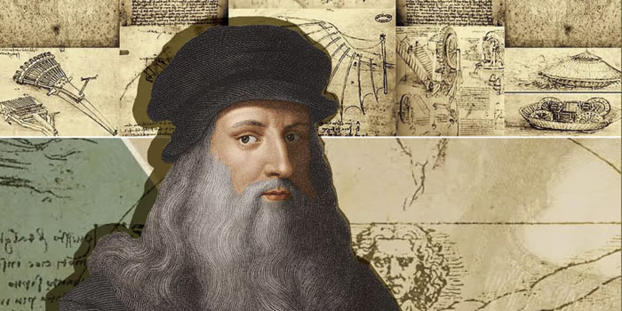

09 - 达芬奇 - 不只是画家
Leonardo da Vinci - More Than a Painter

1452 年，达·芬奇出生于意大利中部，他的家庭十分富有。14岁时，他进入了一个画画的学校，在这里，达芬奇学习了十年。
在画人体时，达·芬奇和其他的画家很不同，他不仅研究人体的外面的样子，还认真地了解人体身体里面的结构。而且，他对光学、物理学、动物和植物都非常感兴趣。因为他有多个学科的知识，所以他真正地做到了“认识自然，再用画笔画出自然”。1482年，30岁的达·芬奇离开佛罗伦萨，他一个人做了多个人的工作，他是工程师，也是建筑师，同时，他也是一个画家。但是，由于他的工作太多，他真正画完的画其实没几幅，很多都是画了一半，他又跑去做其他事情了。他一直不停地观察身边的事，不停地思考。有人说，他并不是想画完一幅画，画画只是他思考的过程。1500年，他回到佛罗伦萨。他十分专心地研究数学和科学。那段时间他几乎没有画画，画的都是关于科学的草图。
达·芬奇64岁的时候去到法国，因为得到了国王的支持，他能更专心地研究科学。1519年，达·芬奇去世时，他在国王面前说，我还没有完成我想做的事情。